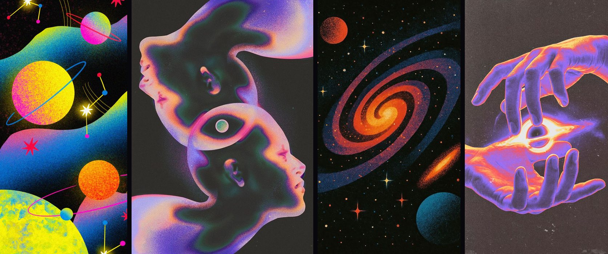
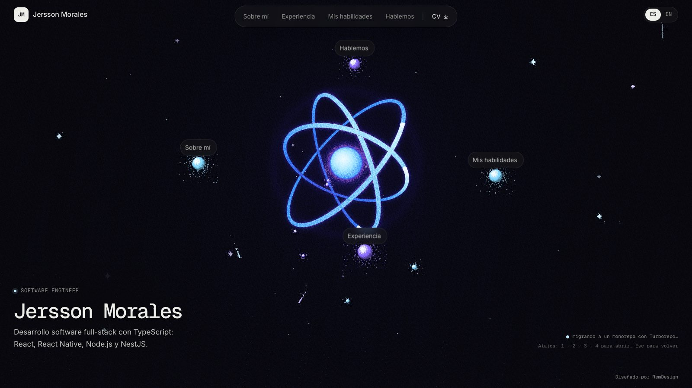
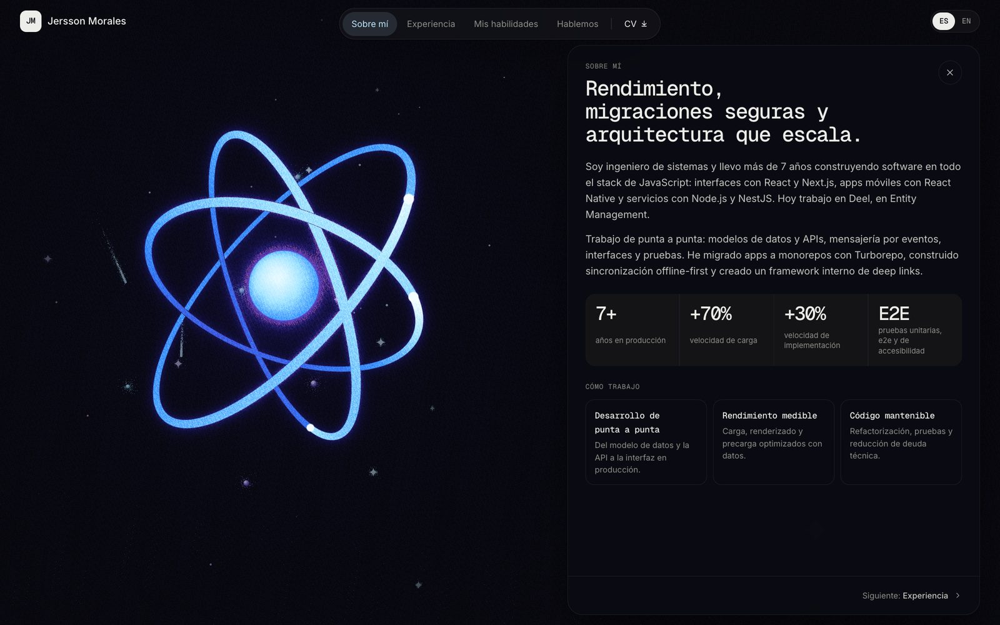
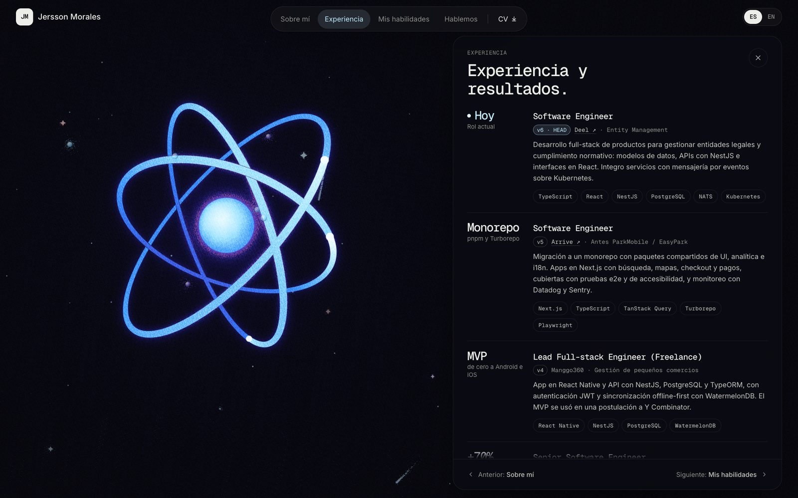
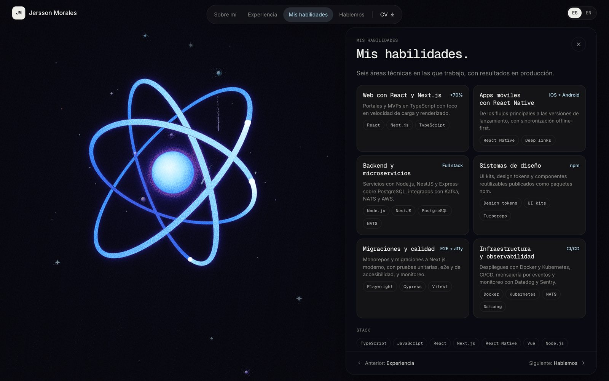
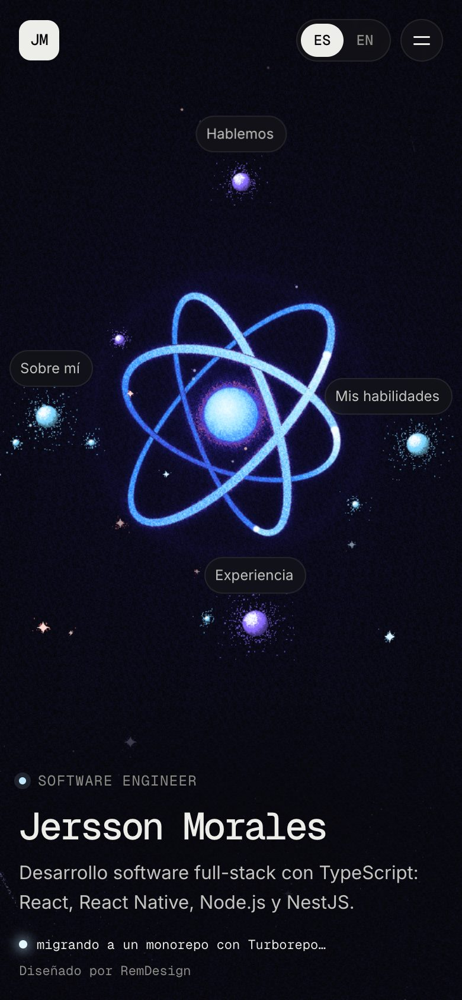

Portafolio interactivo de un ingeniero de software
- Rol
- Diseño de producto y dirección creativa
- Cliente
- Jersson Morales, ingeniero de software full-stack
- Usuarios
- Reclutadores, líderes técnicos y clientes que evalúan su perfil
- Plataformas
- Web responsive: escritorio y móvil
- Herramientas
- Claude AI y Claude Design
- Estado
- Versión final publicada · validada con el cliente y con 4 usuarios · 2026
Jersson Morales es ingeniero de software full-stack, con más de siete años de experiencia. Partía de un portafolio estático, funcional pero convencional, que mostraba la información sin transmitir su criterio técnico. El encargo fue diseñar una experiencia que lo diferenciara frente a reclutadores y equipos técnicos, con un tono profesional y una estética minimalista, moderna y creativa.
Crear una experiencia memorable sobre desarrollo de software sin que la decoración compitiera con la información, y sin perder legibilidad, navegación ni accesibilidad.
El concepto es el núcleo: el punto donde todo converge. En el desarrollo de software, muchas piezas (commits, decisiones y tecnologías) terminan integradas en un sistema que funciona. Traduje esa idea a un átomo: el perfil de Jersson es el núcleo y sus cuatro secciones son partículas en órbita. La metáfora organiza la interfaz en lugar de decorarla, porque navegar consiste en acercar una partícula al núcleo.
- Referencias.Partí de un video con un fuego central y pilares radiales, de cuatro referencias gráficas con grano, gradiente térmico y vocabulario cósmico, y del logo de React como símbolo de su stack.
- Análisis crítico.Separé lo que aportaba cada referencia, como la dinámica de convergencia y la textura granulada, de lo que no comunicaba desarrollo de software, como una escena demasiado literal o un acabado fotorrealista.
- Exploración divergente.Desarrollé cinco conceptos: navegación espacial con un avatar 3D, el compilador, un átomo con moléculas, un procesador sobre una oblea de silicio y una esfera de luz.
- Convergencia.Elegí el núcleo porque conectaba la metáfora con el contenido, permitía integrar la navegación en la escena y admitía un lenguaje gráfico propio, lejos de los recursos genéricos de los productos tecnológicos.
- Diferenciación.El átomo hace un guiño al logo de React, la tecnología central del perfil de Jersson. Esa asociación une en una sola imagen su especialidad técnica y la dimensión creativa del portafolio. Para que fuera un símbolo propio y no una copia del logo, lo reinterpreté con órbitas de distinto tamaño, ángulos irregulares y un grosor que cambia con la profundidad.

Apliqué mi proceso de diseño en cinco etapas, en ciclos cortos sobre la web real.
- Entender.Revisé el encargo, la hoja de vida vigente y el portafolio estático, y analicé las referencias visuales. El contenido era sólido, pero la experiencia no diferenciaba el perfil. Entregables: brief, auditoría de contenido y análisis de referencias.
- Definir.Convertí el encargo en requisitos y en una jerarquía de contenido: logros y métricas primero, y empresas en segundo plano y sin fechas. Organicé el contenido en cuatro secciones. Entregables: requisitos y arquitectura de información.
- Idear.Exploré los cinco conceptos como prototipos navegables con contenido real, para comparar recorridos y no solo imágenes. Entregables: conceptos y flujos de navegación.
- Prototipar.Llevé la propuesta del núcleo a alta fidelidad con Claude Design y Claude AI: escena, interfaz responsive y todos los estados de interacción. Entregables: sistema visual y prototipo funcional publicado.
- Validar.Validé cada iteración con Jersson como usuario y cliente, en escritorio y en móvil, y lo complementé con una revisión heurística. Con la versión final hice pruebas de usabilidad con cuatro usuarios. Entregables: validación con el cliente, pruebas de usabilidad y ajustes priorizados.
- Claude AI. Investigación, análisis crítico de cada concepto frente a las referencias y redacción del contenido a partir de la hoja de vida.
- Claude Design. Prototipado en alta fidelidad sobre la web real: escena, navegación y responsive, con iteraciones rápidas.
- Heurísticas de Nielsen. Visibilidad del estado, porque la partícula responde al señalarla; control y libertad, porque la carga se puede saltar; y consistencia entre la escena y la barra superior.
- Leyes de UX. Ley de Hick para limitar la navegación a cuatro secciones, efecto Von Restorff para dejar un solo protagonista visual por sección y umbral de Doherty para responder de inmediato a cada interacción.
- Jerarquía y escaneabilidad. Síntesis de una o dos frases por experiencia y cada métrica una sola vez.
- Accesibilidad. Navegación por teclado, enlaces directos a cada sección, soporte para movimiento reducido y texto legible sobre la escena.
- Una animación con significado.Cada luz de trabajo que llega al núcleo cambia el texto inferior por una actividad real de la hoja de vida.
- La navegación dentro de la escena.Al señalar una sección en la barra superior o en la escena, su partícula se acerca y envía destellos. Al abrirla, el núcleo la absorbe y de ahí nace el panel.
- Elegir con calma.La órbita se detiene al señalar una sección, y el scroll invierte el giro con un impulso visible.
- Los textos mandan.Las luces se atenúan cuando pasan sobre el texto.
- Una carga con intención.Primero oscuridad, luego surge el núcleo, los electrones trazan sus órbitas y una onda de luz da paso a la interfaz. Se salta con un clic o una tecla, y no aparece al entrar por un enlace directo a una sección.
- Responsive sin cambios innecesarios.En móvil, la barra superior pasa a un menú y el texto conserva la estructura de escritorio.
Extraje una línea gráfica común de cuatro referencias y la traduje a la escena.
- Grano como material. El color se disuelve en punteado, sin degradados lisos.
- Gradiente térmico. Hielo que pasa a azul y violeta, con un filo cálido mínimo.
- Siluetas nítidas. Núcleo y partículas con borde definido y sombreado granulado.
- Vocabulario cósmico. Destellos de cuatro puntas, confeti de puntos y haces finos.
- Casi negro con textura. Un fondo #08080C que se tiñe de índigo hacia el centro.
Jersson fue el usuario de referencia. Revisó cada iteración navegando la web publicada en escritorio y en móvil, y entregó sus observaciones como listas numeradas de ajustes. Cada revisión definió la siguiente decisión.
- El concepto hablaba de otra cosa.La primera escena se parecía demasiado a su referencia y no comunicaba desarrollo de software. Mantuve la convergencia hacia un centro, pero le di el significado de compilar código.
- La decoración competía con el contenido.Había demasiados commits en pantalla. Limité las etiquetas a tres a la vez y dejé un solo protagonista visual por sección.
- La propuesta podía ser genérica.Una esfera brillante sobre negro es un recurso común. La conecté con su trabajo, llevé la navegación a la escena y la convertí en un átomo propio.
- El estilo no correspondía a las referencias.La luz parecía fotorrealista y la esfera recordaba a una luna. Reconstruí el estilo con grano y gradiente térmico, y limité el brillo a las órbitas.
- El contenido debía ser fiel.Algunos textos no coincidían con la hoja de vida vigente. La tomé como única fuente de verdad y los reescribí hacia decisiones y resultados.
Con la versión final hice pruebas de usabilidad con cuatro usuarios, que resolvieron tareas básicas de la web.
- Buscar información. Encontrar datos concretos dentro de las secciones.
- Descargar la hoja de vida. Ubicar y usar el acceso al CV.
- Conocer el perfil. Entender quién es Jersson y qué hace a partir del recorrido.
Los cuatro completaron todas las tareas sin dificultades de navegación, y valoraron de forma positiva el diseño. El hallazgo principal es que la navegación por partículas se entiende sin explicación previa, aunque la muestra es pequeña y cualitativa.
El portafolio pasó de una web estática a una escena interactiva en la que la navegación forma parte de la animación. La propuesta del núcleo, validada con el cliente, reemplazó a todas las versiones anteriores. En las pruebas, los cuatro usuarios completaron todas las tareas sin dificultades de navegación.
- Navegación en la escenaCada sección es una partícula que se acerca al señalarla y nace del núcleo al abrirse.
- Animación con significadoCada luz que llega al núcleo muestra una actividad real de la hoja de vida.
- Un átomo propioUna identidad de grano y gradiente térmico, distinta de su referencia.
Prototipar sobre la web real revela problemas que una imagen aislada no muestra. Una referencia inspira, pero no define: hay que traducirla al contexto. Iterar también es descartar, y una animación resulta propia cuando se conecta con el contenido. La calma se diseña: depende del ritmo, de la jerarquía y de lo que decides quitar.
- Ampliar las pruebas a más reclutadores y líderes técnicos, con tareas medidas por tiempo y éxito.
- Medir con analítica cómo recorren el portafolio quienes lo visitan.
Vídeos y capturas de la propuesta publicada.




